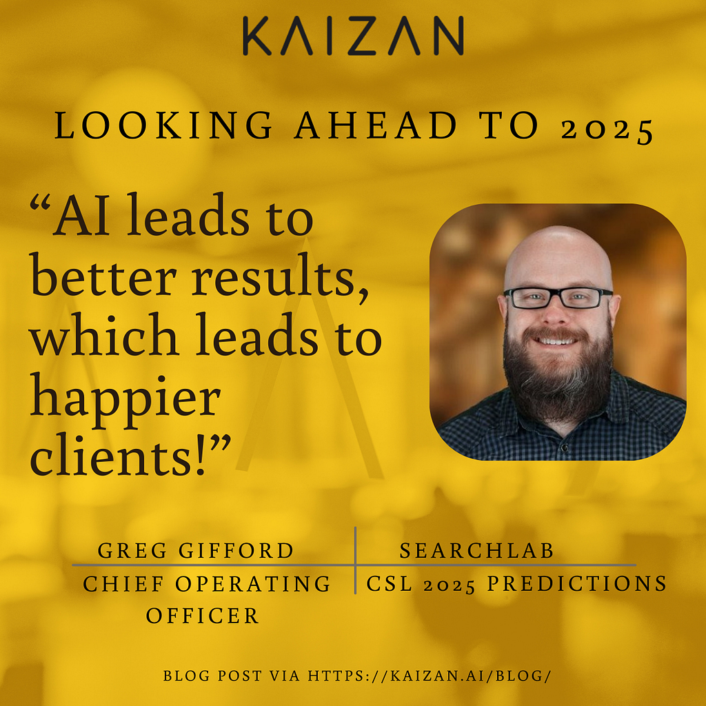

2025 AI Predictions: SearchLab

As we look ahead to a big year for AI, we sat down with some of our clients over the Christmas period to ask them what they foresee for AI in 2025 to help them deliver exceptional products and services to clients.
First up, Greg Gifford; COO at SearchLab!
AI won’t take our jobs
Most people are worried that AI will take their jobs, but that’s not what’s happening or is going to happen. Instead, it will continue to make our jobs easier. AI isn’t a replacement for human effort, it allows us to focus on what truly matters.
When used correctly, AI becomes a powerful tool which makes you more efficient, productive, and helps level up your overall game! Rather than spending time on repetitive, boring tasks, AI allows us to spend more time on impactful, strategic activities — like creative problem-solving, deeper client engagement, or long term account planning.
AI gives us Happier Clients
AI lets us redirect our time away from routine, low impact tasks so we can spend time on the important things. By complementing what we’re already doing, it becomes an integral partner. That leads to better results, which leads to happier clients. Happier clients stick around longer, strengthening relationships and driving business growth: which means our profits increase. Everyone’s happier!
Our team can’t live without Kaizan!
I think the most exciting aspect of AI is how it excels at pattern detection.
Kaizan is a great example of this. It would be incredibly labor-heavy and time-consuming to try keep track of every single client interaction, including reading all emails and listening to all calls… not to mention the effort of scoring client sentiment and coming up with suggestions for communication and touch points.
Kaizan does all that and more, and it’s REALLY good at it. It was immediately our team’s favourite tool, and one that after less than a week, we absolutely could not live without.
Now that we have an AI system like Kaizan which track sentiment and contact points, our team doesn’t have to spend their time monitoring or measuring client minutiae. Instead, we can spend more time on strategic and impactful activities that will benefit our clients. It’s a win win.
2025 AI Predictions: SearchLab was originally published in Kaizan on Medium, where people are continuing the conversation by highlighting and responding to this story.